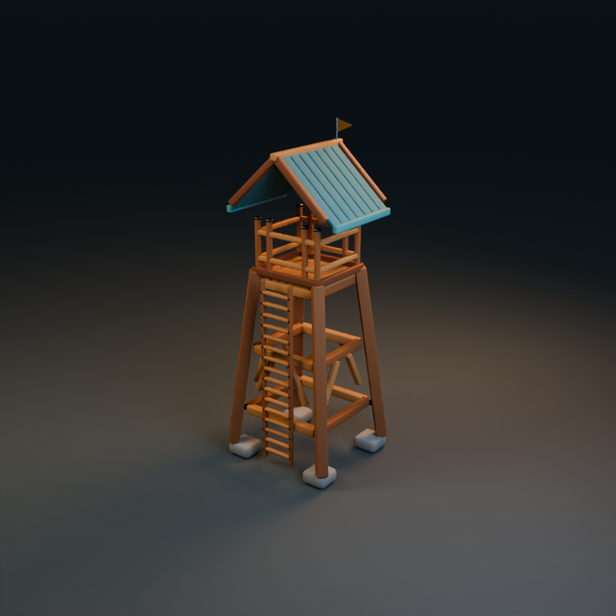
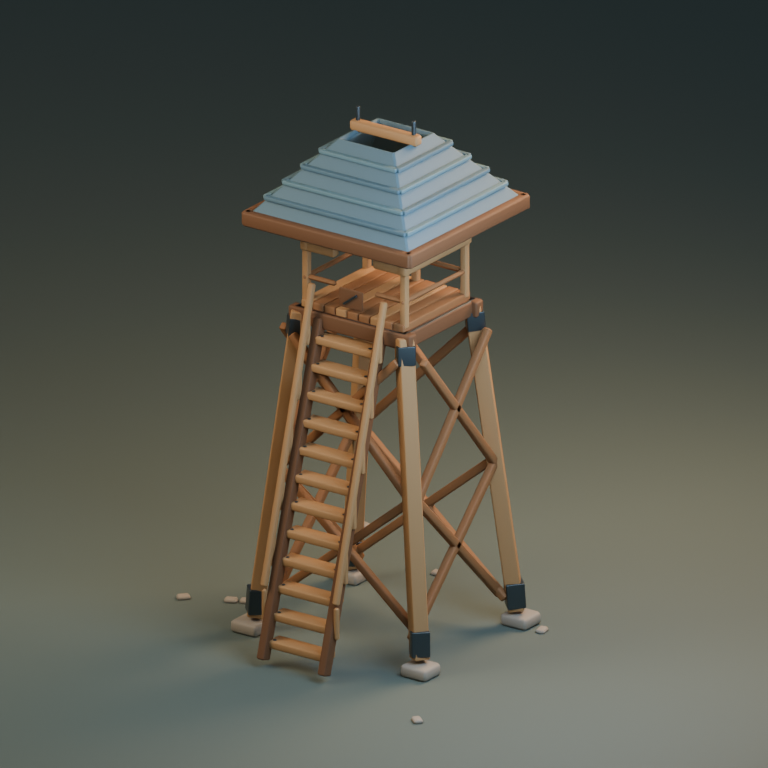
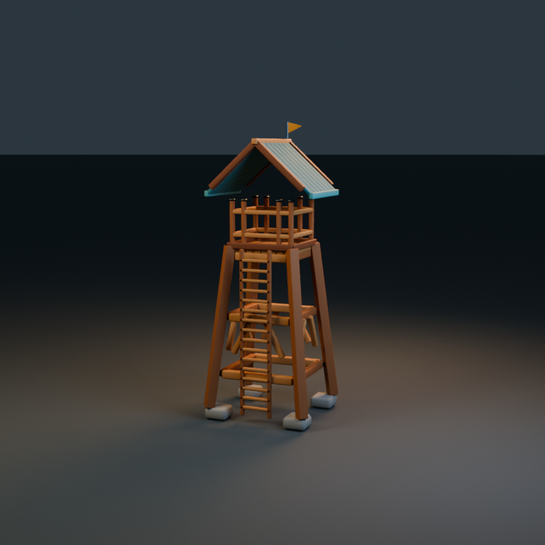
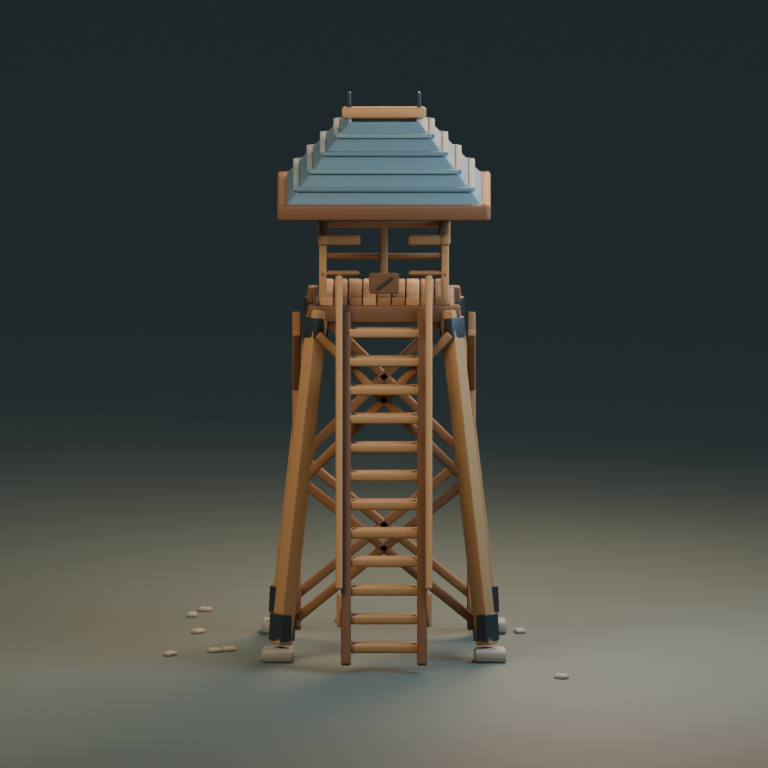
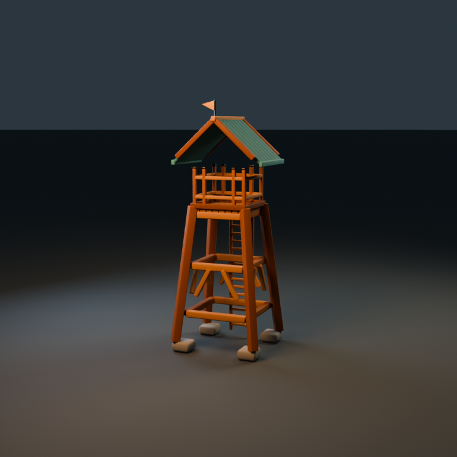
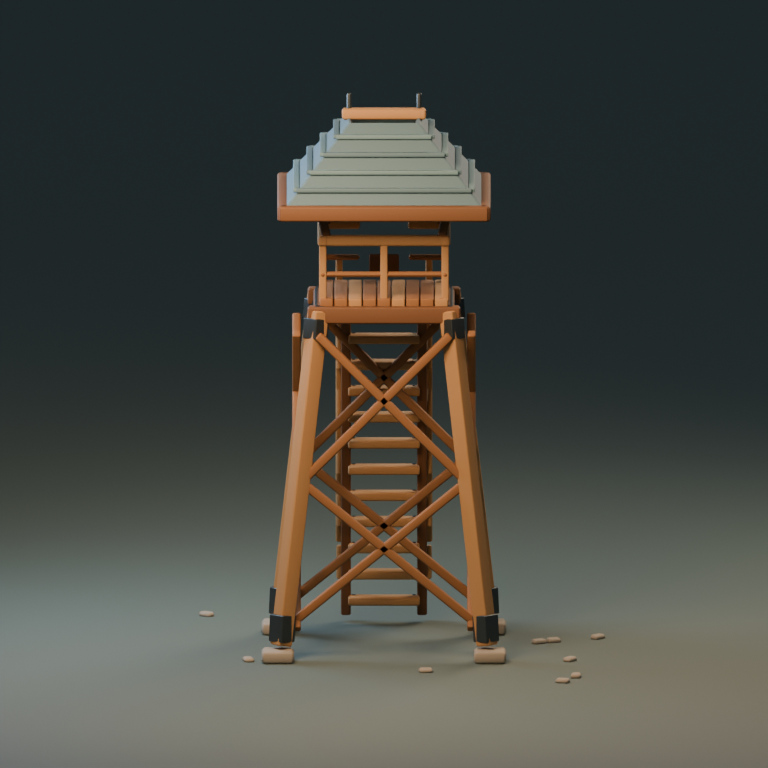

Minha preferência geral nesta execução: B, pelo acabamento visual. A entrega A é mais leve e teve revisão técnica mais extensa. Ambas precisam corrigir problemas de construção.
Mesmo pedido, gpt-6-luna medium, Blender 5.2.3. Uma execução por condição; avaliação não cega; tokens reais indisponíveis.
| A · com skills | B · sem skills | |
|---|---|---|
| Tempo | 9m10s | 5m44s |
| Skills lidas | 7 | 0 |
| Triângulos GLB | 4.929 | 7.708 |
| GLB | 320.452 bytes | 476.400 bytes |
Relatório completo · Projeto A · Projeto B





